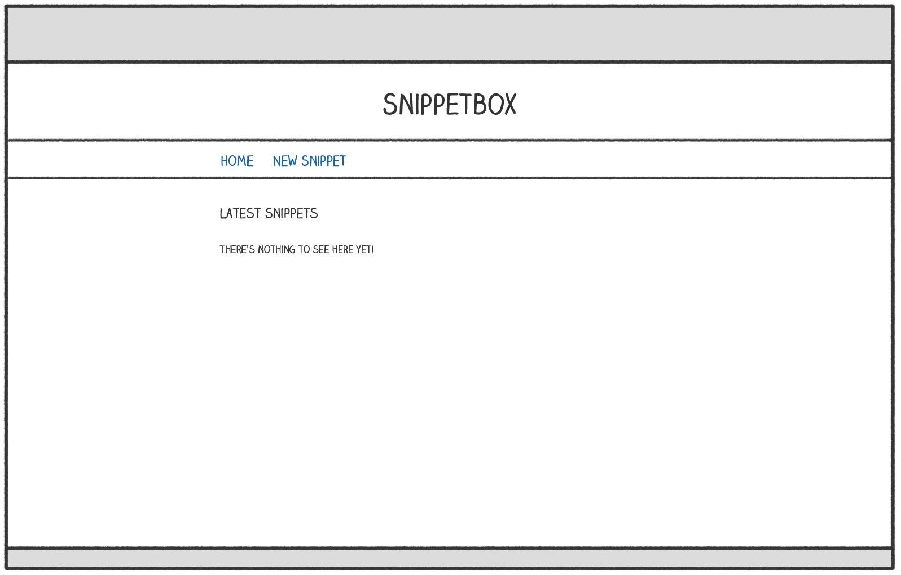
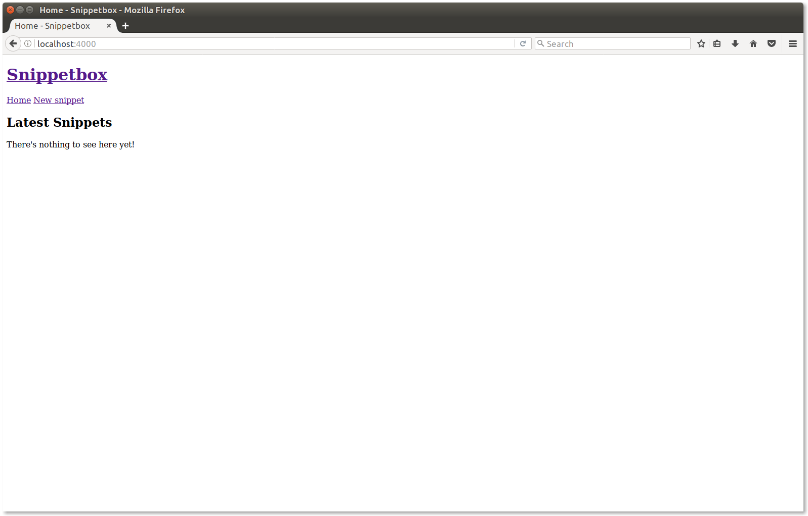

The next step in building our application is to make the Home function render a proper HTML homepage. Ultimately we're aiming to have it look a bit like this mockup:

To make this happen we'll use Go's html/template package, which provides a family of functions for safely parsing and rendering HTML templates.
Let's kick things off by adding two new files to the ui/html directory we made earlier:
A base.html file with the outline HTML template for all our web pages .You might think of this as the 'layout' or 'master' template, if you’re coming from other languages.
A home.page.html file filled with our homepage-specific content.
$ cd $HOME/go/src/snippetbox.org $ touch ui/html/base.html $ touch ui/html/home.page.html
{{define "base"}}
<!doctype html>
<html lang="en">
<head>
<meta charset="utf-8">
<title>{{template "page-title" .}} - Snippetbox</title>
</head>
<body>
<header>
<h1><a href="/">Snippetbox</a></h1>
</header>
<nav>
<a href="/">Home</a>
<a href="/snippet/new">New snippet</a>
</nav>
<section>
{{template "page-body" .}}
</section>
</body>
</html>
{{end}}
{{define "page-title"}}Home{{end}}
{{define "page-body"}}
<h2>Latest Snippets</h2>
<p>There's nothing to see here yet!</p>
{{end}}
Hopefully this feels familiar if you've used templates in other languages before. The two files are simply regular HTML, with some extra actions in double curly braces.
We use the {{define}} and {{end}} actions to surround chunks of HTML and define distinct named templates. In our case we've defined three named templates: base, page-title and page-body. It's perfectly valid for a single file to contain multiple templates, like we have in the home.page.html file.
The {{template}} action is used to embed (or nest) one template in another. In our case the base template uses it to embed the page-title and page-body templates. If you're wondering, the dot at the end of the {{template}} action represents any dynamic data that you want to pass to the embedded template. We'll talk more about this later in the book.
Now for the exciting part. Let's update our Home function to combine these three templates into a template set, and then render the combined result as an HTTP response.
package main import ( "fmt" "html/template" // New import "log" // New import "net/http" "strconv" ) func Home(w http.ResponseWriter, r *http.Request) { if r.URL.Path != "/" { http.NotFound(w, r) return } // Initialize a slice containing the paths to the two files. files := []string{ "./ui/html/base.html", "./ui/html/home.page.html", } // Use the template.ParseFiles() function to read the files and store the // templates in a template set (notice that we can pass the slice of file paths // as a variadic parameter). If there's an error, we log the detailed error // message and use the http.Error() function to send a generic 500 Internal // Server Error response. ts, err := template.ParseFiles(files...) if err != nil { log.Println(err.Error()) http.Error(w, "Internal Server Error", 500) return } // Our template set contains three named templates: base, page-title and // page-body (note that every template in your template set must have a // unique name). We use the ExecuteTemplate() method to execute the "base" // template and write its content to our http.RespsonseWriter. The last // parameter to ExecuteTemplate() represents any dynamic data that we want to // pass in, which for now we'll leave as nil. err = ts.ExecuteTemplate(w, "base", nil) if err != nil { log.Println(err.Error()) http.Error(w, "Internal Server Error", 500) } } ···
There's a couple of things to discuss here.
We've started using the http.Error() function to send a response to the user if something goes wrong when rendering the templates. The http.Error() function is a shortcut – a bit like http.NotFound() – which sends a response to the user with a specific status code and plain-text message.
The file paths that you pass to template.ParseFiles() must be relative to your current working directory, or absolute paths. In the code above I’ve made them relative to the root of the project repository.
So with that said, make sure you're in the root of our project repository and start the application:
$ cd $HOME/go/src/snippetbox.org $ go run cmd/web/* 2017/08/18 18:02:08 Starting server on :4000
Open up http://localhost:4000/ in your web browser and you should see that the HTML homepage is starting to take shape nicely.

Go's html/template package also provides a {{block}}...{{end}} action for embedding templates in each other. This is similar to the {{template}} action, except you can specify some default content if the template being embedded doesn't exist in the current template set.
In the context of a web application, this is particularly handy when you want to provide some default content (like a sidebar of footer) that individual pages can override on a case-by-case basis if they need to.
Syntactically you use it like this:
{{define "base"}}
<h1>An example template</h1>
{{block "sidebar" .}}
<p>My default sidebar content</p>
{{end}}
{{end}}
You can also, if you wish, not specify any default content between the {{block}} and {{end}} actions. In that case, if the embedded template doesn't exist in the template set then nothing will be rendered at all.
If you view source of the homepage in your browser, you'll see that there is whitespace where the action tags are. In most cases this won't cause any problems and you shouldn't worry about it. But if it's important to you, you can remove the whitespace by pre/post-fixing your actions with the hyphen character.
{{- define "base" -}}
<!doctype html>
<html lang="en">
<head>
<meta charset="utf-8">
<title>{{template "page-title" .}} - Snippetbox</title>
</head>
<body>
<header>
<h1><a href="/">Snippetbox</a></h1>
</header>
<nav>
<a href="/">Home</a>
<a href="/snippet/new">New snippet</a>
</nav>
<section>
{{- template "page-body" . -}}
</section>
</body>
</html>
{{- end -}}